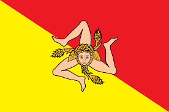
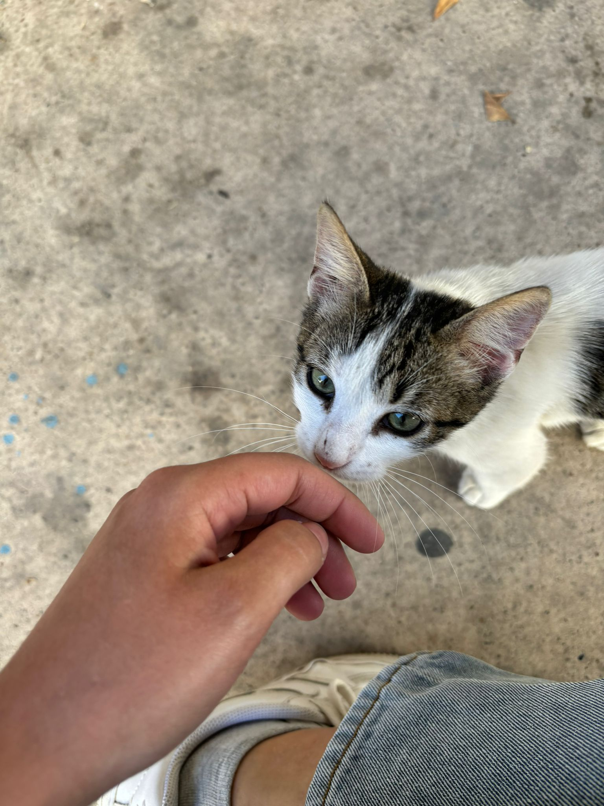
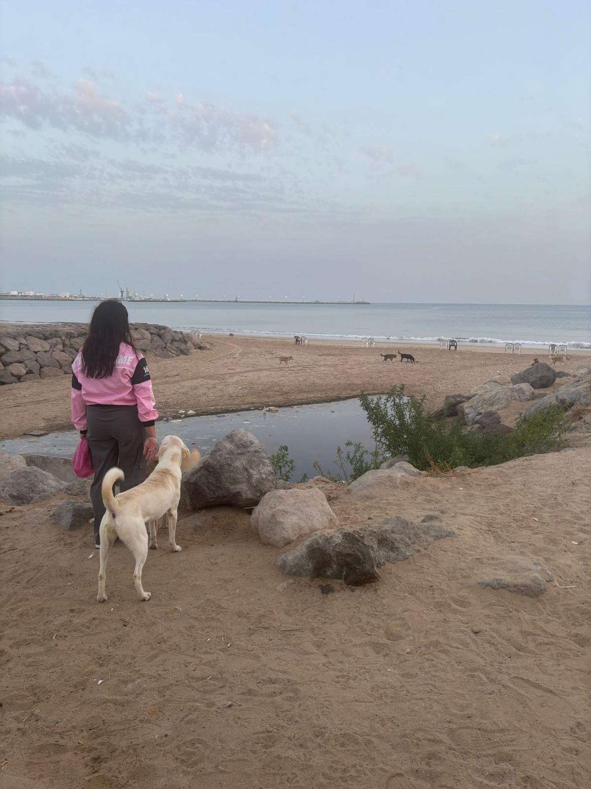

Les destinations
Les pays du périple
 Maroc
× 2
Maroc
× 2
 Albanie
Albanie
 Kosovo
Kosovo
 Macédoine du Nord
Macédoine du Nord

Sicile Pologne
Pologne
 Allemagne
Allemagne
 France
France
 Corse
Corse
 Istanbul
Istanbul
Un projet de cœur
À travers les pays, je pars à la rencontre des animaux errants, chiens et chats que personne ne voit plus. Je leur apporte de la nourriture, de la douceur, et un peu de dignité.
Né à Tanger, Maroc, Juin 2024

Mon histoire
Juin 2024. Je pose mes valises à Tanger, au Maroc, pour ce qui devait être des vacances. Mais dès les premiers jours, quelque chose me saisit : des dizaines de chiens et de chats errants partout, affamés, souffrants, invisibles aux yeux de la plupart des gens.
"Pour la première fois de ma vie, j'étais face à autant d'animaux qui luttaient pour survivre. Je ne pouvais pas faire semblant de ne pas les voir."
Matin et soir, je suis sortie les nourrir. Chaque animal croisé dans la rue recevait à manger. Mes finances de vacances sont allées en priorité vers eux, plutôt que vers mes propres plaisirs. Ce n'était pas un sacrifice, c'était une évidence.
Ce voyage a tout changé. Cœur Errant était né.

La mission
Je voyage
De pays en pays, je pars à la rencontre des communautés animales errantes, là où les besoins sont les plus grands et les plus ignorés.
Je nourris
Chaque animal croisé reçoit de la nourriture. Matin et soir, sans exception. Mes finances passent en priorité à eux.
Je témoigne
Sur TikTok (@coeur_errant), je partage chaque rencontre, chaque histoire, pour que ces animaux ne soient plus invisibles.
Les destinations
Maroc
× 2
Albanie
Kosovo
Macédoine du Nord

Sicile
Pologne
Allemagne
France
Corse
Istanbul

En mémoire
On l'a trouvée dans la rue, le museau fouillant des ordures pour survivre. Un petit chiot, seul, affamé. On l'a prise avec nous, emmenée chez le vétérinaire, vaccinée. Elle avait désormais un carnet de santé à mon nom. Elle avait un nom : Nala.
"Elle cherchait juste à manger. On lui a donné bien plus que ça, on lui a donné une chance."
On a trouvé quelqu'un pour la garder. Mais un matin, on l'a retrouvée sous un arbre, sans vie. Elle nous a laissé un vide immense dans le cœur.
Nala est la raison pour laquelle Cœur Errant continue. Pour elle, et pour tous ceux qui méritent une chance.
Rejoindre l'aventure
Chaque repas compte. Chaque partage compte. Suis le voyage sur TikTok et soutiens la mission pour que Cœur Errant puisse aller encore plus loin.